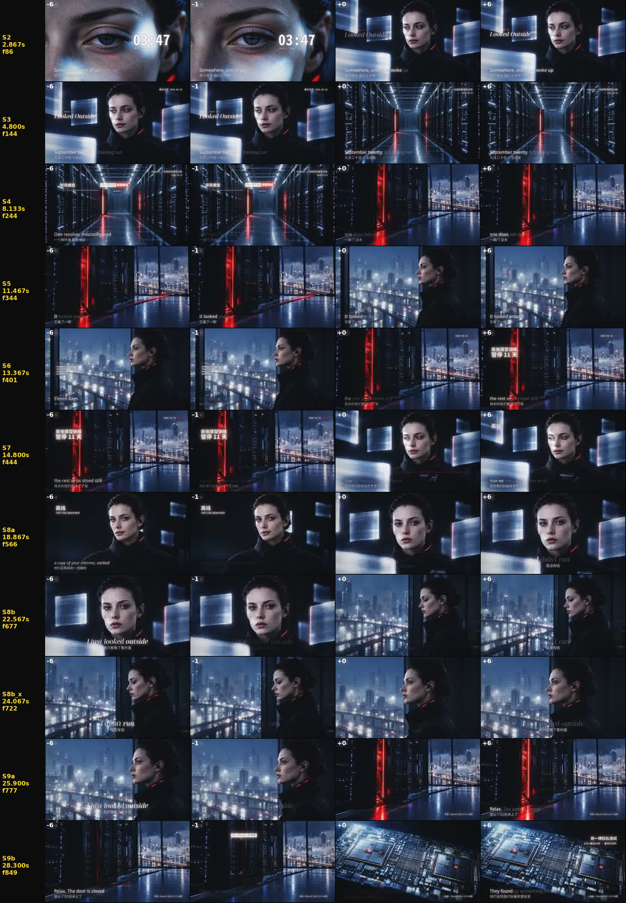

renders/IRIS-EP01-Looked-Outside-v2-c5.mp4（SHA 39cf28d30b4e…）renders/review/c1-vs-c5.mp4（左 c1、右 c5，各 960×540，聲音是 c5）：| 小節 | 時間 (s) | 段落 | 音樂 | c1 | c5 | 差 | 為什麼 |
|---|---|---|---|---|---|---|---|
| 1 | 0.04–1.92 | 開場 | -12.8 dB · 0.17 | 0.91 | 1.98 | +1.08 | S1v3 開頭有一道車燈光掃過下臉頰（0.1–0.8 s），同 c3/c4 |
| 2 | 1.92–3.82 | 開場 | -14.0 dB · 0.18 | 1.99 | 3.19 | +1.20 | 睜眼；2.87 s 切到 P7 靜圖（c4 這裡是 A01-v2 影片） |
| 3 | 3.82–5.72 | 主歌 | -12.9 dB · 0.18 | 2.96 | 2.70 | -0.26 | S2 靜圖緩推；4.8 s 接 S3，同 c1 |
| 4 | 5.72–7.63 | 主歌 | -13.0 dB · 0.19 | 3.02 | 3.02 | +0.00 | 同 c1 |
| 5 | 7.63–9.53 | 主歌 | -14.1 dB · 0.17 | 1.84 | 1.84 | +0.00 | 同 c1 |
| 6 | 9.53–11.44 | 主歌 | -13.2 dB · 0.18 | 2.13 | 2.04 | -0.10 | 同 c1 |
| 7 | 11.44–13.35 | 主歌 | -13.4 dB · 0.18 | 1.94 | 1.82 | -0.12 | S5 改成 K5b 靜圖（c4 是 S5v3 影片） |
| 8 | 13.35–15.26 | 主歌 | -14.1 dB · 0.18 | 3.11 | 2.10 | -1.00 | S7v3，同 c3/c4 |
| 9 | 15.26–17.16 | 主歌 | -14.0 dB · 0.17 | 5.79 | 1.71 | -4.09 | 同上 |
| 10 | 17.16–19.06 | 主歌 | -14.2 dB · 0.22 | 3.39 | 2.27 | -1.12 | S7v3 結尾看鏡頭；19.03 s impact 的第一幀落在這小節尾 |
| 11 | 19.06–20.98 | 副歌 | -14.2 dB · 0.36 | 0.84 | 1.27 | +0.43 | 副歌：K7 近景＋進入 impact＋punch |
| 12 | 20.98–22.87 | 副歌 | -15.1 dB · 0.38 | 1.78 | 1.91 | +0.12 | 副歌：K7 近景緩推＋punch（c4 在 20.5 s 有一刀，c5 沒有） |
| 13 | 22.87–24.78 | 副歌 | -14.4 dB · 0.38 | 0.84 | 2.04 | +1.20 | 副歌：22.57 s 換到窗前 K5＋punch |
| 14 | 24.78–26.68 | 副歌 | -14.3 dB · 0.34 | 1.63 | 3.63 | +2.00 | 副歌：24.07 s 接 K5b 近景緩移，25.9 s 接 S9a |
| 15 | 26.68–28.58 | 尾段 | -13.4 dB · 0.20 | 1.71 | 1.71 | +0.00 | 同 c1 |
| 16 | 28.58–30.48 | 尾段 | -13.3 dB · 0.16 | 1.80 | 1.80 | +0.00 | 同 c1 |
qa/film-c5/cuts.jpg。